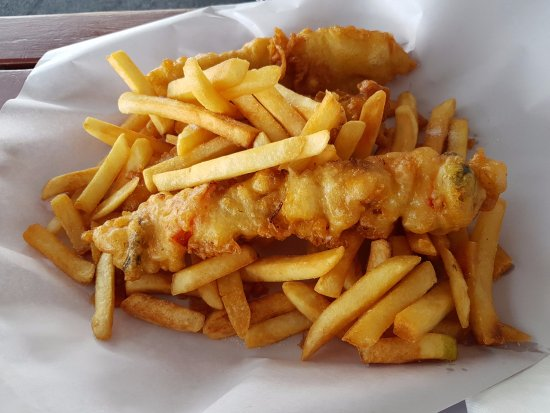

Food has always been an imperative part of human co-experience.
Founded on the foundation of biological needs, food is a great way to
enrich your life and engage with society. Certain regions of the world
have their own culture, including a food culture.
This site aims
to rank some common foods found in the Western world fast food,
through an objective ground-breaking scale known as "how good they
are".
| S |  | ||
|---|---|---|---|
| A |  |
||
| B |  |
||
| C |  |
||
| D |